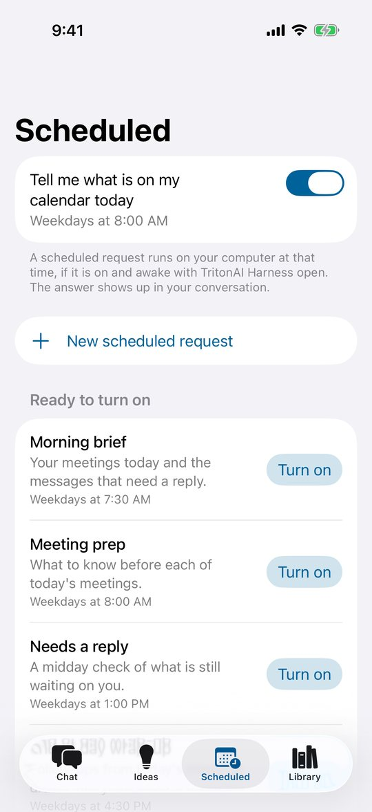
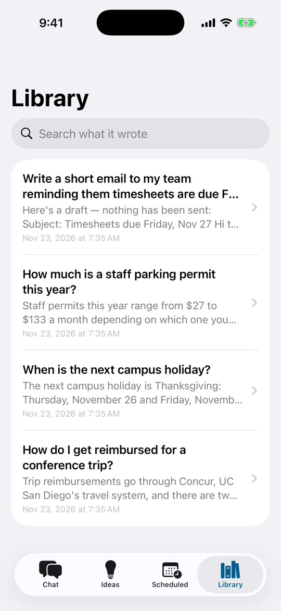

Microsoft 365
Outlook mail and calendar, Teams, OneDrive and SharePoint files.
For UC San Diego staff · iPhone
TritonAI Harness Chat puts the assistant on your work computer in your pocket. It works from your own calendar, mail and files, does the legwork, and brings back something you can use.
Free. Requires iOS 18 or later and TritonAI Harness on your Mac or PC.
Choose a request to see how it works.
Illustration with sample data.
TritonGPT
Policies, procedures and campus information, the same for everyone who asks.
TritonAI Harness Chat
Your calendar, your inbox, your files and your projects. It gathers, summarizes and drafts, and the result is specific to you.
What it does
Each request below draws on your own accounts, as connected in TritonAI Harness on your computer. Select one to see what happens.
Illustration with sample data. What it can reach depends on the accounts you have connected.
How it works
The app is a remote for TritonAI Harness on your own Mac or PC. Requests travel from your phone to that computer and nowhere else.
The accounts and plugins you signed in to in TritonAI Harness on your computer. Nothing new to set up on the phone.
No projects, threads or models to choose. Ask, follow up, or start a new topic.
Send a request, put the phone down, and read the result when you are ready.
Always clear
The assistant sits at the top of the chat and shows its current step in plain words. Tap it while it works to see each step, and afterward to review what it did.
Control
The assistant prepares. You decide.
Needs your OK
Send this reply to the six people on the thread?
Waiting for your OK
Connections
Each connection is a plugin in TritonAI Harness. Sign in once on your computer and it is available from your phone.
Outlook mail and calendar, Teams, OneDrive and SharePoint files.
Drive, Docs and Sheets.
The workbooks and dashboards you have access to.
Campus forms and the apps built on them.
Your tickets and where they stand.
Your diagrams and boards.
Your automated workflows.
Blink and Services & Support, for the policy behind a task.
Availability depends on which plugins are switched on and signed in on your own computer.
The app




Setup
On your Mac or PC, open TritonAI Harness and choose to connect a phone. It shows a code.
Point your iPhone at the screen. There is no account to create and nothing to sign in to.
Leave the Harness open on your computer. With Tailscale on both devices, it works away from your Wi-Fi too.
The setup guide has each step in detail. The app also includes a demo with sample answers, so you can look around before connecting anything.
Privacy
Your phone talks only to your own computer. What you type, say or attach goes there and nowhere else. The app has no accounts, no analytics, no advertising and no tracking, and it collects no data.
FAQ
TritonGPT answers questions about UC San Diego. TritonAI Harness Chat works with your own calendar, mail, files and connected tools, and carries out tasks for you on your own computer.
UC San Diego staff who use TritonAI Harness on a Mac or PC. The app is a companion to the Harness and needs it to do real work.
Yes. Your computer does the work, so it needs to be awake with TritonAI Harness open. If it is not reachable, the app holds your message and sends it when the connection is back.
By default, yes. With Tailscale on both your phone and your computer, you can use the app from anywhere.
No. It writes drafts and asks before acting. What it can reach depends on what you have turned on in TritonAI Harness on your computer.
Yes. Choose "Try a demo first" on the opening screen. The demo uses sample answers and touches none of your information.
Nothing. The app is free.
The setup and support page has step-by-step instructions, or email tritonai@ucsd.edu.